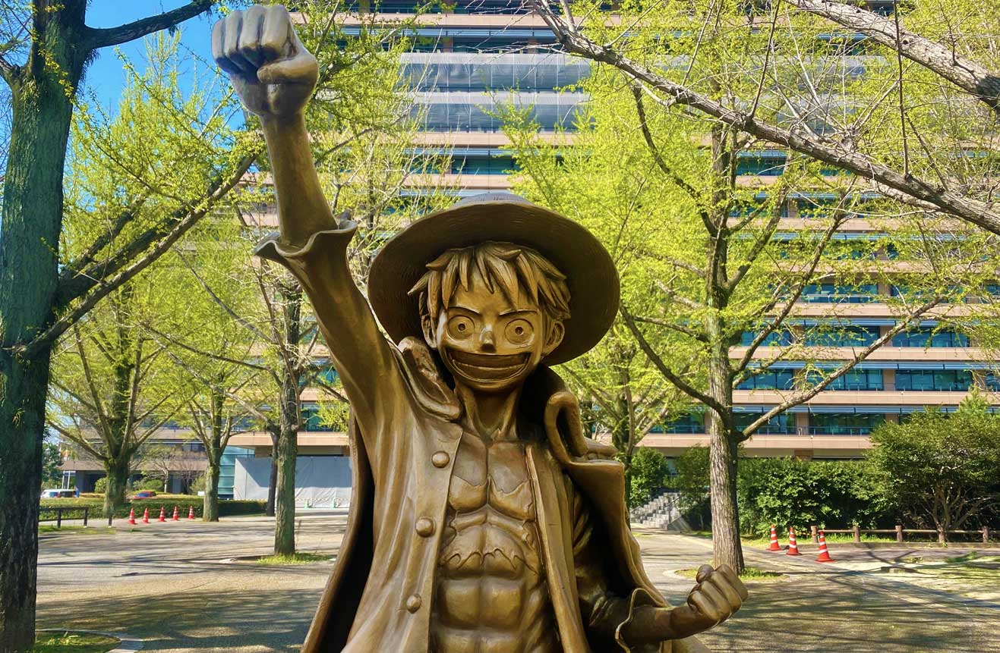

Straw Hat Voyage - One Piece Route
เส้นทางโตเกียว - โยโกฮามา - โอไดบะ พร้อมจุดแลนด์มาร์กธีมโจรสลัดและมุมถ่ายภาพที่แฟน One Piece ห้ามพลาด
ดูรายละเอียดเส้นทางแบบเต็ม
ลำดับเส้นทาง (Google Maps Style)
- Day 1: Narita Airport -> Asakusa -> Tokyo Skytree
- Day 2: Akihabara -> Odaiba Seaside Park
- Day 3: Yokohama Red Brick Warehouse -> Yamashita Park
- Day 4: Kamakura Coast -> Enoshima
- Day 5: Tokyo Station -> Narita Airport
ดูรายละเอียด/จอง